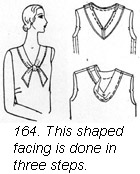
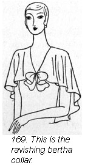
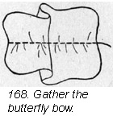

1930—Paris Frocks at Home
Lesson XI—Keeping Paris Frocks Up-to-Date
Make a Parisian wardrobe from your good American dresses.
As each new season approaches you will want to survey the possibilities of the clothes you have on hand. It seems a pity to discard a favorite frock. We would suggest that you hold over promising frocks to study what can be done to make them conform to the new season's fashions.
It does take ingenuity to modernize one's old clothes successfully. Don't tackle the problem alone. Consult the Butterick publications, Delineator and Butterick Quarterly. In every issue you will find suggestions that can be applied to your frocks to bring out-moded garments up-to-date.
Last season's frocks can look like a million dollars.
As long as it is the fashion to combine two materials in one costume, remodeling is easy. The idea is this. Select a smart pattern combining two fabrics. Use your old frock for the part that takes the most material and then buy a little new material for the rest.
Figured materials combined with plain of a harmonizing color are stunning in wool, silk or cotton. To contrast textures in matching colors is another smart trick, and there is little danger of producing lines which cut the figure in an unbecoming place. Combine wool with silk, crepe and velvet with chiffon, or georgette, chiffons with lace or tulle and cottons with batiste, handkerchief linen or voile.
Tunics and angel sleeves.
Last year's afternoon frock that is too short for this year of grace can be dropped low from a yoke of lace to make a stunning Sunday night frock with angel sleeves. The vogue for tunics is a blessing to those of us who have hoarded knee-length frocks. Skirts that seemed a total loss can now be lowered to decent length on bodice tops and combined with a new tunic blouse of lame or satin, or you can reverse the English and make a knee-length tunic of a too short frock, combining it with a new skirt. (Ill. 154.)
You can make an ankle-length dance frock by cutting off last year's dipping hemline evenly below the knees and adding an 18" band of tulle.
Reclaim worn sleeves.
So often sleeves wear out before their time. Butterick has prepared special patterns to replace them.
If a sleeve is worn at the elbow, cut it off here and combine it with lace or chiffon (Ill. 155), or add a flare below the elbow (Ill. 156). If it requires a whole new sleeve, give it dolman sleeves of contrasting fabric in matching color—chiffon sleeves for a velvet frock or velvet sleeves for a crepe frock.
The lingerie touch.
It is surprising how much a fresh lingerie touch in the form of a bow or a collar will do to modernize last season's dress. The Deltor is full of unusual suggestions for making the little collars and cuffs, bindings and chic lingerie bows that look so casual and so truly French.
The mannequins on this page show two smart versions of the lingerie bow. Cut a straight strip of organdie, voile or batiste. Roll and whip or make a narrow hem around the four edges. You may have them picoted if you wish but hand work on lingerie details is always more desirable. Now make two bound vertical slits on the front of your blouse and gather your hemmed strip through the center and thread it through the slits. (Illustration 158.)
The French bow knot.
This same type of strip may be tied in a soft knot and used at the point of a V neckline with a collar of similar material tucked at the neckline to fit around the curve at the back of the neck and over the shoulder. (Illustration 157.)
Fresh touches for little girls' dresses.
The Deltor will show you how to cut a shaped facing for the neckline of a child's dress with ends to cross in front, and how to stitch it to the inside of the neckline and fold it over to the outside. The ends of the little tabs are turned in and the right tab is lapped over the left one and the whole stitched down.
Illustration 160 varies this by lining the two ends of the facing and making a bound buttonhole in each tab. The tabs are not stitched down to the frock but are buttoned down with buttons sewed on each side of the center front.
There are many clever little touches that you can add to the necklines of last year's frocks and jackets that will make a youngster's eyes sparkle. Illustration 161 shows two little buckles posed each side of a neck with a band threaded through them. This doubled band is stitched down across the back to form the tailored collar.
Sport clothes demand tailored necklines.
An effective use of the straight tie for blouses is shown in illustration 163.
Do this to any old blouse.
Make your tie, double and cut the ends slanting. Slip the tie over the neckline and draw the ends out through two horizontal bound slashes and loop or tie in a bow.
You'll see this finish on many smart frocks.
A shaped facing applied to the neckline of a sports blouse is often used with a little suggestion of fullness at the center front over which is tacked a softly made knot. (Illustration 164.) Stitch the right side of your facing to the inside of the blouse. Turn it toward the outside, gather the center front of the facing and draw it up slightly. Baste and stitch the turned-in edges of the facing down to your blouse. Make a knot, tack at the center front, and stitch the turned in edges of the ends down to your blouse.
Occasionally the ends of the facing are cut long enough to make the knot in one with the facing. The Deltor will show you how to do this.
Capes and bertha collars are rejuvenating.
Have you ever considered removing the sleeves from your last season's dress and adding a capelet at the armhole or a cape collar or a bertha at the neckline? One of the most successful Sunday supper frocks of the season is an inspiration for just this treatment. Full capelets of net are set into the armholes of a black satin frock, a net yoke fills in the neck and the hem is transparent net for at least 13 inches.
The Deltors of new Butterick patterns will show you how to cut and apply these touches to your old frocks. Patterns Nos. 2996 and 3004 were the source for the good looking capelet collar on this page and the smart bertha on the next. The little tie, in both cases, adds a soft flattering touch at the point of the V. These collars and berthas are particularly good in chiffon, georgette or soft silk crape.
Butterfly bows are  effective.
effective.

If you like a perky touch, try a butterfly bow at the joining of your bertha collar in the front. Illustration 168 shows you how to make it, gathering it through the center. It may be inserted through two vertical slashes or shaped in a double bow and tacked at the center front as shown in illustration 169. The tie should be cut as in illustration 165, slightly shaped through the center, and made with a rolled hem.
For true economy.
All these little remodeling tricks are only economy when your material is really worth wearing some more. If it was inexpensive to start with or is badly worn, it is no economy to make it over. But, a good frock that merely suffers from a change of style should by all means be salvaged. There is every hope in the world for its living a long and useful life if you make use of the help offered by the Butterick fashion service.